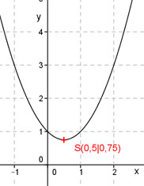

Aufgabe 51 Bestimmen Sie die Koordinaten des Extremwertes für y = x2 - x + 1 Der Extremwert einer Parabel ist der Scheitel- punkt. Ist die Parabel nach oben geöffnet, ist es der tiefste, ist sie nach unten geöffnet, der höchste Punkt. y = x2 - x + 1 Die Parabel ist nach oben geöffnet, Zahl vor x2 ist positiv. Quadratische Ergänzung: y = x2 - x + 0,25 – 0,25 + 1 Mit x2 - x + 0,25 = (x – 0,5)2 Scheitelpunktform: y = (x – 0,5)2 + 0,75 Abgelesen: S(0,5|0,75) Der Extremwert, der tiefste Punkt, hat die Koordinaten (0,5|0,75). 